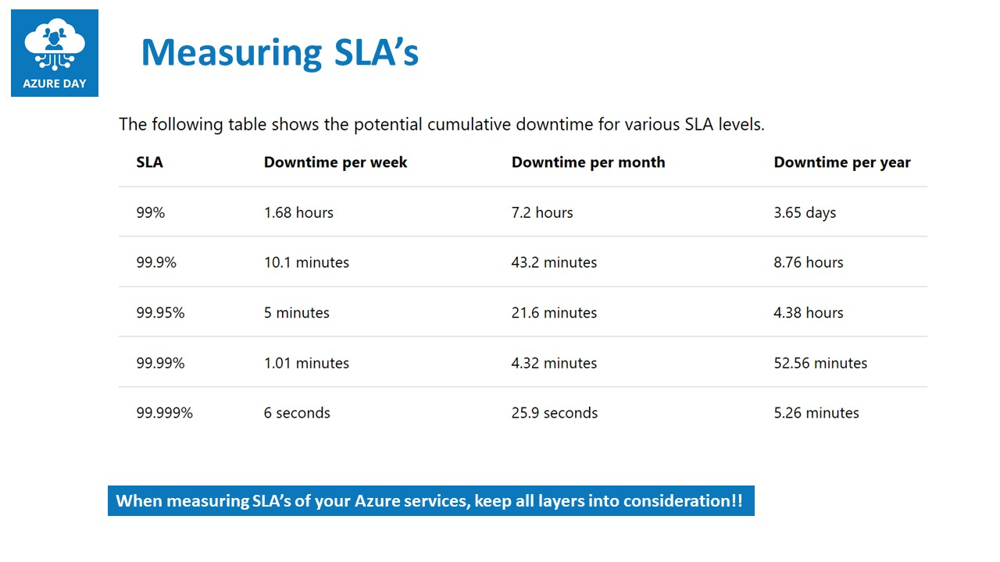
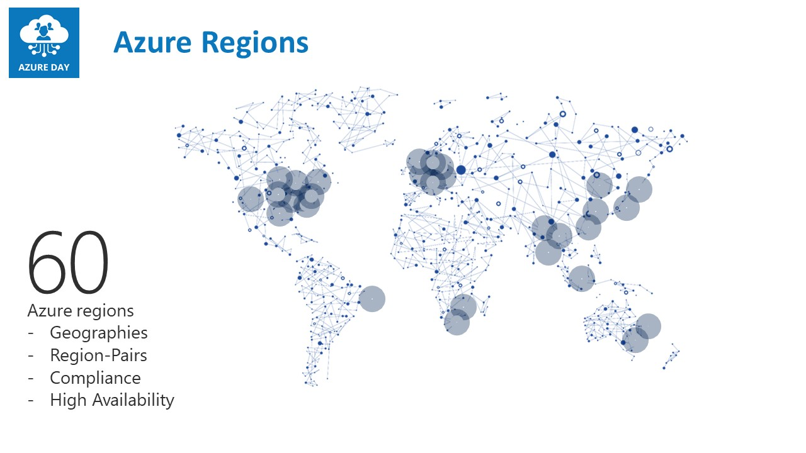
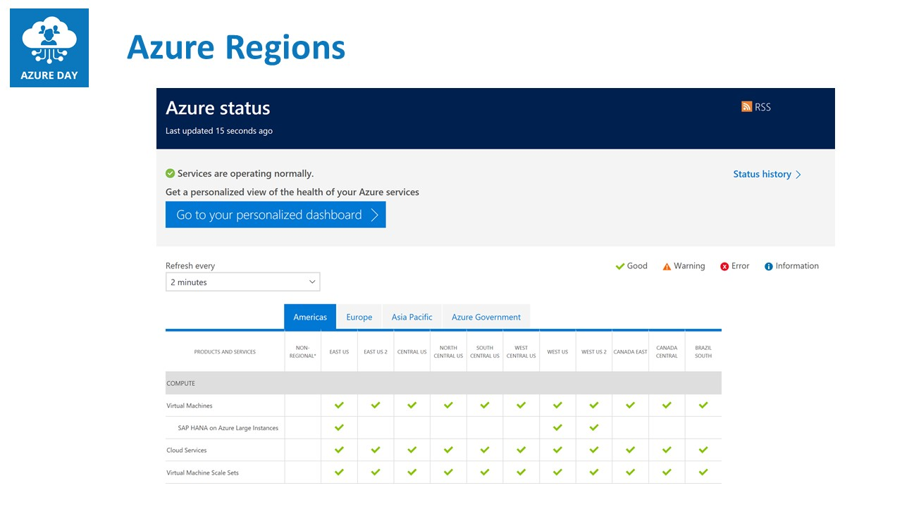
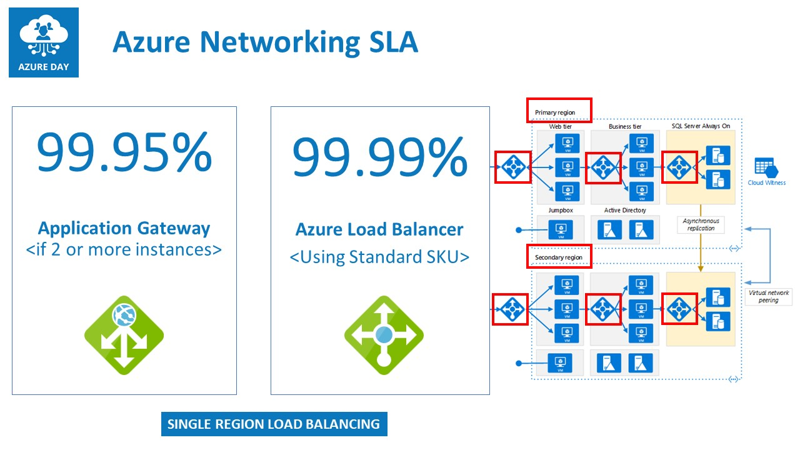
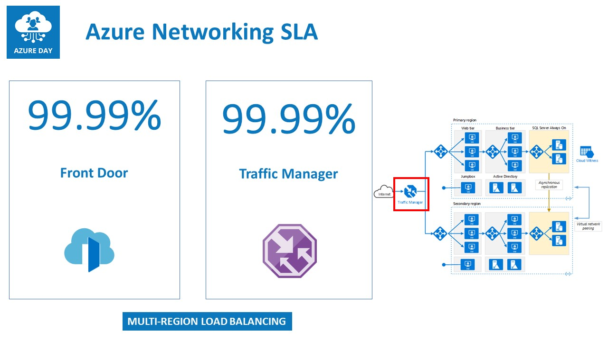
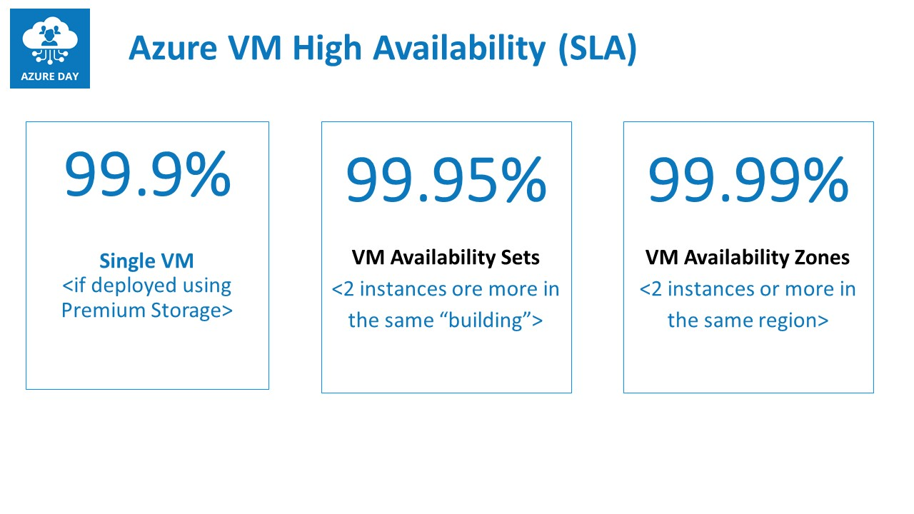
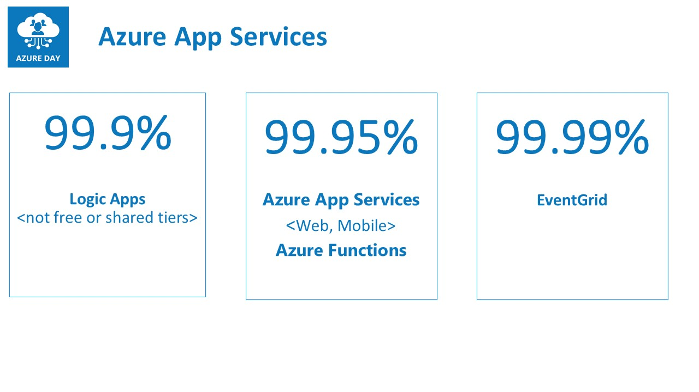
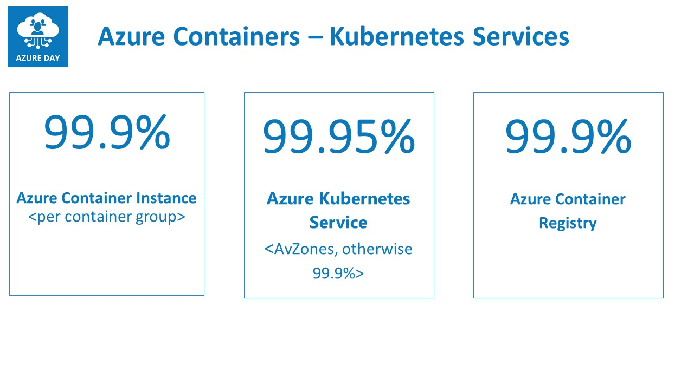
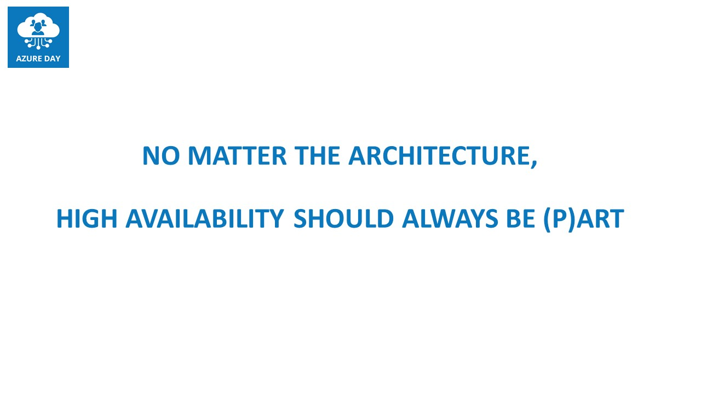

Last Friday, I delivered an online session at the “Azure Day Rome 2020”, titled “Azure is 100% high available, or is it?”
Since the conference sessions were only 45min, I didn’t have much time to drill down on all the details, but apparently I managed to provide a clear and easy overview of several misconceptions around public cloud high-availability, and even more important, how Azure provides several services and architectures, to optimize the overall high availability of your workloads. Whether you deploy IAAS, PAAS or Serverless.
Already during the session, as well as afterwards, I started getting emails or social media messages from attendees, asking if I could “confirm” their current architectures, or recommend any changes to their existing deployments.
What better inspiration to have for another blog post, right?
Measuring SLA’s
High availability is expressed in a Service Level Agreement (SLA), determining how much seconds, minutes or hours (potential) downtime is to be faced. The common ones are
- 99.9% (“the 3 nines”),
- 99.99% (“the 4 nines”) and
- 99.999% (“the fives nines”)
but these are not the only ones.
Here is a summarized view of the common ones there are across different Azure services:

Note: Azure Services SLA’s are always referring to the monthly numbers
As you can already learn from this table, Azure (just like any other public cloud, as well as on-premises datacenters for that matter…) is not providing 100% SLA.
But this is not what the session was about obviously. What’s more important, is how to achieve the ultimate SLA in Azure, for different architectures available today.
Azure Regions
A first level of redundancy one can make use of, are the different Azure Regions, available across the globe. Technically, one can decide on any regions you want to use for your cloud-running workloads (exceptions are US Government, China and “local clouds”), and boosting the high availability from a regional perspective. Easy said, instead of deploying your workload (Azure Virtual Machine, Azure Web App, Azure Functions,…) in a single region, deploy it in at least 2 or more regions.

Luckily not too frequent, but every now and then, an Azure region becomes totally unavailable. Historical situations were mostly related to weather conditions (heavy storms in San Antonio Tx, 2018) or human mistakes (releasing faulty patch to Azure storage fabric in multiple regions at once, 2019).
To get a clear view on what the status is of any given Azure region, as well as all services running within that region, have a look at Azure Status

Azure Networking
Azure Virtual Networking is the cornerstone of a lot of Azure services in IAAS, PAAS and Serverless. This means those services won’t be able to run, if the underlying network stack is having issues. But outside of that, there are also a few services within the Azure Networking Provider, helping you to optimize the SLA of your non-networking related services. I’m talking about Load Balancers.
Azure provides 4 different load balancing services:
- Azure Load Balancer
- Azure Application Gateway
- Traffic Manager
- Azure Front Door
While I will definitely dedicate additional blog posts for these, let me summarize the core characteristics of each:
Azure Load Balancer and Azure App Gateway
Azure Load Balancer is a layer4 (transport) load balancer, capable of load balancing any IP traffic to defined endpoints (Virtual Machines, App Services, DB Services,…), and can be set up as an internal-only (no public IP) or external-only (only public IP) configuration. (more info can be found at Azure Load Balancer)
Azure Load Balancer guarantees a 99.95% SLA
Azure App Gateway is a layer 7 (application) load balancer, capable of load balancing HTTP and HTTPS traffic only, to defined endpoints (Virtual Machine Web Server, App Services), and can be configured as internal or external. Major difference to the former Azure Load Balancer, is that it only recognizes web traffic, but on top of that, it also comes web-traffic specific features like SSL offloading, session affinity, URL redirection and WAF - Web Application Firewall (more info can be found at Azure App Gateway)
Azure App Gateway guarantees a 99.99% SLA

Note: both load balancing solutions are active in a single-region topology, which means it can only act as a load balancer for workloads running in the same region as the load balancers
Traffic Manager and Azure Front Door
Traffic Manager is a DNS-based load balancer, allowing for load balancing traffic across multiple “sites”, which could be multiple Azure regions, but also across Azure and a non-Azure region (on-premises, other public cloud,…). It provides several different load balancing mechanisms like round robin, priority, geographical or high-availability. (more info can be found at Traffic Manager)
Azure Traffic Manager guarantees a 99.99% SLA
Azure Front Door Azure Front Door is much similar to Azure App Gateway, as it comes with a lot of identical features, but runs as a global Azure service. This means it is not limited to a specific region, but rather is deployed for load-balancing web traffic across multiple regions. Where a region can be an Azure region, or any other public endpoint (other public clouds, on-premises public-internet facing web applications,…) (more info can be found at Azure Front Door)
Azure Front Door guarantees a 99.99% SLA

Azure Virtual Machines
Probably one of the most looked for SLA’s is running Virtual Machine-based workloads on Azure. Since these are closest to the traditional on-premises datacenter architecture, it is most familiar. Azure Virtual Machines can be deployed in 3 different architectures, each providing a different SLA:
Single Virtual Machine
When you deploy a single Virtual Machine instance in an Azure Region, using (the default) premium managed disks, it provides an SLA of 99.9%. This is OK, but not always recommended for a production-running scenario. The underlying infrastructure is a physical server, running in a physical rack in an Azure region’s datacenter.
Azure Availability Sets
To optimize the SLA of Virtual Machines, the next option is an Availability Set, moving up the SLA to 99.95%; An Availability Set concept is a bit of Azure intelligence, by which you deploy at least 2 or more instances of an identical VM setup. Each VM is guaranteed running on a different physical server, in a different physical rack in the same Azure Region. In case of downtime (planned or unplanned) of a physical rack (defined as a Fault Domain) or any of its components, this will obviously bring down the running Virtual Machine. But the other instance(s) are not impacted by it, optimizing the high-availability.
Potential downside of an Availability Set, is it is still bound to the same building. So the multiple Virtual Machine instances you have running across different physical racks won’t help much in case of a full building impact.
That’s where you can choose for another setup, using Availability Zones.
Azure Availability Zones
Availability Zones are the ultimate architecture when you look for the best high-availability for your business-critical Virtual Machine workloads. Besides running high available across multiple physical racks (similar to AVSets before), the physical racks are also spread across multiple buildings. In case of a complete building outage, your instance(s) will still be available in any of the other buildings. But still within the same region. Look here for additional info on Availability Zones

Note: to reach a “close to 100%” Virtual Machine high availability, one should consider deploying your VM-workloads in Availability Zones across multiple Azure Regions; keep in mind though this might drive the cost up dramatically, as each VM instance incorporates full consumption)
Azure App Services
Azure App Services is the “umbrella terminology” for different Platform as a Service (PAAS) services like Web Apps, API Apps, Mobile Apps, Logic Apps and Azure Functions. In terms of high availability, it is different for each service within this classification:
- Logic Apps comes with a 99.9% SLA
- Web Apps, API Apps and Mobile Apps are covering a 99.95% SLA, as well as for Azure Functions
- EventGrid guarantees a 99.99% SLA, which is interesting, as it mainly relies on any of the other App Services for its functioning

Azure Container Services
Last, let me touch on the SLA for different Azure Container Services.
The core services related to Azure Containers are:
- Azure Container Registry (99.9%)
- Azure Container Instance (99.9%)
- Azure Kubernetes Service (99.95%)
Given the popularity and business-criticality of containers these days, I am personally a bit surprised to see these rather low numbers. On the other hand, knowing containers are typically running for a short period of time, the impact could be quite low. Azure Container Registry is mainly following the SLA’s from it’s underlying Azure storage service, where Azure Kubernetes Service is relying on Azure Availability Sets.

Summary
This blog post only gives a short overview of different Azure services architectures, and what different SLA’s they offer within each service. Ultimately, your high-availability architecture for any given workload should probably combine different of these services. For example, if you deploy multiple VM instances as part of Availability Zones, you would still need to add some load balancing solution next to it, to guarantee the high-availability of the workload itself.
Given the complexity for specific scenarios, I guess I can come up with a few concrete examples from customers, and what architectural designs I used to give you some ideas about what and how to architect.
However, keep the following in mind:

Stay safe and healthy you all!
/Peter